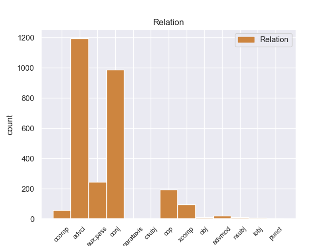
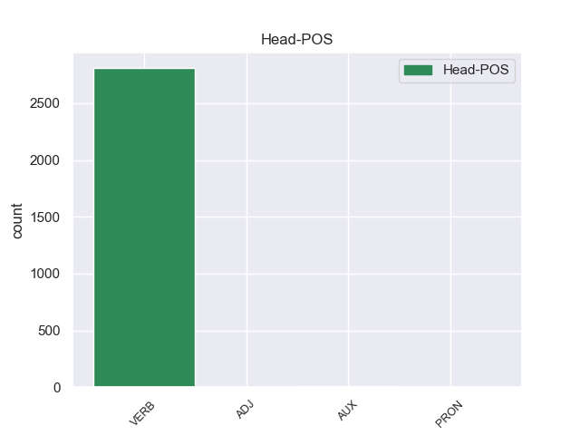
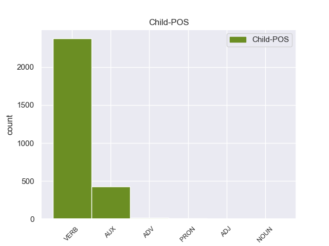

Distribution of features within this leaf



Agreement Rules sorted by frequency.
- When the dependent token is the adverbial clause modifier(advcl) of the head token,
1 Ese _ _ _ _ 0 _ _ _
2 mismo _ _ _ _ 0 _ _ _
3 año _ _ _ _ 0 _ _ _
4 participó participar VERB _ Mood=Ind|Number=Sing|Person=3|Tense=Past|VerbForm=Fin 0 _ _ _
5 con _ _ _ _ 0 _ _ _
6 el _ _ _ _ 0 _ _ _
7 equipo _ _ _ _ 0 _ _ _
8 ruso _ _ _ _ 0 _ _ _
9 en _ _ _ _ 0 _ _ _
10 la _ _ _ _ 0 _ _ _
11 Olimpiada _ _ _ _ 0 _ _ _
12 de _ _ _ _ 0 _ _ _
13 Ajedrez _ _ _ _ 0 _ _ _
14 de _ _ _ _ 0 _ _ _
15 Estambul _ _ _ _ 0 _ _ _
16 y _ _ _ _ 0 _ _ _
17 obtuvo obtuvar VERB _ Mood=Ind|Number=Sing|Person=3|Tense=Past|VerbForm=Fin 4 advcl _ _
18 la _ _ _ _ 0 _ _ _
19 medalla _ _ _ _ 0 _ _ _
20 de _ _ _ _ 0 _ _ _
21 bronce _ _ _ _ 0 _ _ _
22 en _ _ _ _ 0 _ _ _
23 tanto _ _ _ _ 0 _ _ _
24 que _ _ _ _ 0 _ _ _
25 mejor _ _ _ _ 0 _ _ _
26 segunda _ _ _ _ 0 _ _ _
27 jugador _ _ _ _ 0 _ _ _
28 reservista _ _ _ _ 0 _ _ _
29 de _ _ _ _ 0 _ _ _
30 el _ _ _ _ 0 _ _ _
31 torneo _ _ _ _ 0 _ _ _
32 ( _ _ _ _ 0 _ _ _
33 los _ _ _ _ 0 _ _ _
34 equipos _ _ _ _ 0 _ _ _
35 estaban _ _ _ _ 0 _ _ _
36 formados _ _ _ _ 0 _ _ _
37 por _ _ _ _ 0 _ _ _
38 cuatro _ _ _ _ 0 _ _ _
39 jugadores _ _ _ _ 0 _ _ _
40 titulares _ _ _ _ 0 _ _ _
41 y _ _ _ _ 0 _ _ _
42 dos _ _ _ _ 0 _ _ _
43 reservas _ _ _ _ 0 _ _ _
44 ) _ _ _ _ 0 _ _ _
45 . _ _ _ _ 0 _ _ _
1 Antonio _ _ _ _ 0 _ _ _
2 Saca _ _ _ _ 0 _ _ _
3 , _ _ _ _ 0 _ _ _
4 también _ _ _ _ 0 _ _ _
5 popularmente _ _ _ _ 0 _ _ _
6 conocido _ _ _ _ 0 _ _ _
7 como _ _ _ _ 0 _ _ _
8 " _ _ _ _ 0 _ _ _
9 Tony _ _ _ _ 0 _ _ _
10 Saca _ _ _ _ 0 _ _ _
11 " _ _ _ _ 0 _ _ _
12 , _ _ _ _ 0 _ _ _
13 nació nació VERB _ Mood=Ind|Number=Sing|Person=3|Tense=Past|VerbForm=Fin 0 _ _ _
14 en _ _ _ _ 0 _ _ _
15 la _ _ _ _ 0 _ _ _
16 ciudad _ _ _ _ 0 _ _ _
17 de _ _ _ _ 0 _ _ _
18 Usulután _ _ _ _ 0 _ _ _
19 , _ _ _ _ 0 _ _ _
20 El _ _ _ _ 0 _ _ _
21 Salvador _ _ _ _ 0 _ _ _
22 , _ _ _ _ 0 _ _ _
23 el _ _ _ _ 0 _ _ _
24 9 _ _ _ _ 0 _ _ _
25 de _ _ _ _ 0 _ _ _
26 marzo _ _ _ _ 0 _ _ _
27 de _ _ _ _ 0 _ _ _
28 1965 _ _ _ _ 0 _ _ _
29 , _ _ _ _ 0 _ _ _
30 desciende desciende VERB _ Mood=Ind|Number=Sing|Person=3|Tense=Past|VerbForm=Fin 13 conj _ _
31 de _ _ _ _ 0 _ _ _
32 una _ _ _ _ 0 _ _ _
33 familia _ _ _ _ 0 _ _ _
34 palestina _ _ _ _ 0 _ _ _
35 católica _ _ _ _ 0 _ _ _
36 que _ _ _ _ 0 _ _ _
37 llegó _ _ _ _ 0 _ _ _
38 a _ _ _ _ 0 _ _ _
39 El _ _ _ _ 0 _ _ _
40 Salvador _ _ _ _ 0 _ _ _
41 a _ _ _ _ 0 _ _ _
42 principios _ _ _ _ 0 _ _ _
43 de _ _ _ _ 0 _ _ _
44 el _ _ _ _ 0 _ _ _
45 siglo _ _ _ _ 0 _ _ _
46 XX _ _ _ _ 0 _ _ _
47 . _ _ _ _ 0 _ _ _
1 También _ _ _ _ 0 _ _ _
2 fue ser AUX _ Mood=Ind|Number=Sing|Person=3|Tense=Past|VerbForm=Fin 3 aux:pass _ _
3 presentado presentado VERB _ Mood=Ind|Number=Sing|Person=3|Tense=Past|VerbForm=Fin 0 _ _ _
4 el _ _ _ _ 0 _ _ _
5 Mila _ _ _ _ 0 _ _ _
6 2 _ _ _ _ 0 _ _ _
7 , _ _ _ _ 0 _ _ _
8 una _ _ _ _ 0 _ _ _
9 versión _ _ _ _ 0 _ _ _
10 de _ _ _ _ 0 _ _ _
11 dos _ _ _ _ 0 _ _ _
12 plazas _ _ _ _ 0 _ _ _
13 . _ _ _ _ 0 _ _ _
1 También _ _ _ _ 0 _ _ _
2 es ser AUX _ Mood=Ind|Number=Sing|Person=3|Tense=Pres|VerbForm=Fin 3 cop _ _
3 importante importante VERB _ Mood=Ind|Number=Sing|Person=3|Tense=Pres|VerbForm=Fin 0 _ _ _
4 identificar _ _ _ _ 0 _ _ _
5 aquellas _ _ _ _ 0 _ _ _
6 actividades _ _ _ _ 0 _ _ _
7 capaces _ _ _ _ 0 _ _ _
8 de _ _ _ _ 0 _ _ _
9 aumentar _ _ _ _ 0 _ _ _
10 el _ _ _ _ 0 _ _ _
11 potencial _ _ _ _ 0 _ _ _
12 para _ _ _ _ 0 _ _ _
13 eventos _ _ _ _ 0 _ _ _
14 extremos _ _ _ _ 0 _ _ _
15 . _ _ _ _ 0 _ _ _
1 Pero _ _ _ _ 0 _ _ _
2 el _ _ _ _ 0 _ _ _
3 espiritu _ _ _ _ 0 _ _ _
4 de _ _ _ _ 0 _ _ _
5 Bones _ _ _ _ 0 _ _ _
6 no _ _ _ _ 0 _ _ _
7 descansa descansa VERB _ Mood=Ind|Number=Plur|Person=3|Tense=Pres|VerbForm=Fin 12 xcomp _ _
8 en _ _ _ _ 0 _ _ _
9 paz _ _ _ _ 0 _ _ _
10 , _ _ _ _ 0 _ _ _
11 y _ _ _ _ 0 _ _ _
12 espera esperar VERB _ Mood=Ind|Number=Sing|Person=3|Tense=Pres|VerbForm=Fin 0 _ _ _
13 la _ _ _ _ 0 _ _ _
14 oportunidad _ _ _ _ 0 _ _ _
15 para _ _ _ _ 0 _ _ _
16 volver _ _ _ _ 0 _ _ _
17 a _ _ _ _ 0 _ _ _
18 la _ _ _ _ 0 _ _ _
19 vida _ _ _ _ 0 _ _ _
20 y _ _ _ _ 0 _ _ _
21 vengar _ _ _ _ 0 _ _ _
22 se _ _ _ _ 0 _ _ _
23 de _ _ _ _ 0 _ _ _
24 todos _ _ _ _ 0 _ _ _
25 los _ _ _ _ 0 _ _ _
26 que _ _ _ _ 0 _ _ _
27 le _ _ _ _ 0 _ _ _
28 han _ _ _ _ 0 _ _ _
29 traicionado _ _ _ _ 0 _ _ _
30 . _ _ _ _ 0 _ _ _
1 El _ _ _ _ 0 _ _ _
2 representante _ _ _ _ 0 _ _ _
3 de _ _ _ _ 0 _ _ _
4 el _ _ _ _ 0 _ _ _
5 Frente _ _ _ _ 0 _ _ _
6 Cívico _ _ _ _ 0 _ _ _
7 en _ _ _ _ 0 _ _ _
8 Tribunal _ _ _ _ 0 _ _ _
9 de _ _ _ _ 0 _ _ _
10 Cuentas _ _ _ _ 0 _ _ _
11 de _ _ _ _ 0 _ _ _
12 la _ _ _ _ 0 _ _ _
13 provincia _ _ _ _ 0 _ _ _
14 de _ _ _ _ 0 _ _ _
15 Córdoba _ _ _ _ 0 _ _ _
16 , _ _ _ _ 0 _ _ _
17 José _ _ _ _ 0 _ _ _
18 Medina _ _ _ _ 0 _ _ _
19 , _ _ _ _ 0 _ _ _
20 denunció denunció VERB _ Mood=Ind|Number=Sing|Person=3|Tense=Past|VerbForm=Fin 0 _ _ _
21 que _ _ _ _ 0 _ _ _
22 el _ _ _ _ 0 _ _ _
23 gobierno _ _ _ _ 0 _ _ _
24 de _ _ _ _ 0 _ _ _
25 Schiaretti _ _ _ _ 0 _ _ _
26 pidió pidiar VERB _ Mood=Ind|Number=Sing|Person=3|Tense=Past|VerbForm=Fin 20 ccomp _ _
27 autorización _ _ _ _ 0 _ _ _
28 para _ _ _ _ 0 _ _ _
29 realizar _ _ _ _ 0 _ _ _
30 reparaciones _ _ _ _ 0 _ _ _
31 en _ _ _ _ 0 _ _ _
32 la _ _ _ _ 0 _ _ _
33 Casa _ _ _ _ 0 _ _ _
34 de _ _ _ _ 0 _ _ _
35 las _ _ _ _ 0 _ _ _
36 Tejas _ _ _ _ 0 _ _ _
37 por _ _ _ _ 0 _ _ _
38 más _ _ _ _ 0 _ _ _
39 de _ _ _ _ 0 _ _ _
40 un _ _ _ _ 0 _ _ _
41 millón _ _ _ _ 0 _ _ _
42 de _ _ _ _ 0 _ _ _
43 pesos _ _ _ _ 0 _ _ _
44 el _ _ _ _ 0 _ _ _
45 pasado _ _ _ _ 0 _ _ _
46 19 _ _ _ _ 0 _ _ _
47 de _ _ _ _ 0 _ _ _
48 octubre _ _ _ _ 0 _ _ _
49 , _ _ _ _ 0 _ _ _
50 cuando _ _ _ _ 0 _ _ _
51 ya _ _ _ _ 0 _ _ _
52 estaba _ _ _ _ 0 _ _ _
53 la _ _ _ _ 0 _ _ _
54 decisión _ _ _ _ 0 _ _ _
55 de _ _ _ _ 0 _ _ _
56 demoler _ _ _ _ 0 _ _ _
57 el _ _ _ _ 0 _ _ _
58 edificio _ _ _ _ 0 _ _ _
59 . _ _ _ _ 0 _ _ _
1 Cuando _ _ _ _ 0 _ _ _
2 fuman _ _ _ _ 0 _ _ _
3 su _ _ _ _ 0 _ _ _
4 primer _ _ _ _ 0 _ _ _
5 porro _ _ _ _ 0 _ _ _
6 de _ _ _ _ 0 _ _ _
7 dicha _ _ _ _ 0 _ _ _
8 planta _ _ _ _ 0 _ _ _
9 , _ _ _ _ 0 _ _ _
10 se _ _ _ _ 0 _ _ _
11 les el PRON _ Mood=Ind|Number=Plur|Person=3|Tense=Pres|VerbForm=Fin 12 iobj _ _
12 aparece aparecer VERB _ Mood=Ind|Number=Sing|Person=3|Tense=Pres|VerbForm=Fin 0 _ _ _
13 el _ _ _ _ 0 _ _ _
14 fantasma _ _ _ _ 0 _ _ _
15 de _ _ _ _ 0 _ _ _
16 Ivory _ _ _ _ 0 _ _ _
17 , _ _ _ _ 0 _ _ _
18 que _ _ _ _ 0 _ _ _
19 les _ _ _ _ 0 _ _ _
20 ayuda _ _ _ _ 0 _ _ _
21 en _ _ _ _ 0 _ _ _
22 sus _ _ _ _ 0 _ _ _
23 exámenes _ _ _ _ 0 _ _ _
24 para _ _ _ _ 0 _ _ _
25 ingresar _ _ _ _ 0 _ _ _
26 en _ _ _ _ 0 _ _ _
27 la _ _ _ _ 0 _ _ _
28 Universidad _ _ _ _ 0 _ _ _
29 de _ _ _ _ 0 _ _ _
30 Harvard _ _ _ _ 0 _ _ _
31 , _ _ _ _ 0 _ _ _
32 donde _ _ _ _ 0 _ _ _
33 tendrán _ _ _ _ 0 _ _ _
34 que _ _ _ _ 0 _ _ _
35 adaptar _ _ _ _ 0 _ _ _
36 se _ _ _ _ 0 _ _ _
37 a _ _ _ _ 0 _ _ _
38 la _ _ _ _ 0 _ _ _
39 vida _ _ _ _ 0 _ _ _
40 unversitaria _ _ _ _ 0 _ _ _
41 . _ _ _ _ 0 _ _ _
1 Igualmente _ _ _ _ 0 _ _ _
2 , _ _ _ _ 0 _ _ _
3 la _ _ _ _ 0 _ _ _
4 presencia _ _ _ _ 0 _ _ _
5 de _ _ _ _ 0 _ _ _
6 Ledesma _ _ _ _ 0 _ _ _
7 está _ _ _ _ 0 _ _ _
8 supeditada _ _ _ _ 0 _ _ _
9 a _ _ _ _ 0 _ _ _
10 la _ _ _ _ 0 _ _ _
11 actuación _ _ _ _ 0 _ _ _
12 de _ _ _ _ 0 _ _ _
13 el _ _ _ _ 0 _ _ _
14 seleccionado _ _ _ _ 0 _ _ _
15 argentino _ _ _ _ 0 _ _ _
16 sub _ _ _ _ 0 _ _ _
17 20 _ _ _ _ 0 _ _ _
18 en _ _ _ _ 0 _ _ _
19 los _ _ _ _ 0 _ _ _
20 Panamericanos _ _ _ _ 0 _ _ _
21 , _ _ _ _ 0 _ _ _
22 ya _ _ _ _ 0 _ _ _
23 que _ _ _ _ 0 _ _ _
24 Cirigliano _ _ _ _ 0 _ _ _
25 sólo sólo ADV _ Mood=Ind|Number=Sing|Person=3|Tense=Imp|VerbForm=Fin 26 advmod _ _
26 estaría estaer VERB _ Mood=Ind|Number=Sing|Person=3|Tense=Imp|VerbForm=Fin 0 _ _ _
27 en _ _ _ _ 0 _ _ _
28 condiciones _ _ _ _ 0 _ _ _
29 de _ _ _ _ 0 _ _ _
30 jugar _ _ _ _ 0 _ _ _
31 ante _ _ _ _ 0 _ _ _
32 Aldosivi _ _ _ _ 0 _ _ _
33 en _ _ _ _ 0 _ _ _
34 caso _ _ _ _ 0 _ _ _
35 de _ _ _ _ 0 _ _ _
36 que _ _ _ _ 0 _ _ _
37 el _ _ _ _ 0 _ _ _
38 elenco _ _ _ _ 0 _ _ _
39 " _ _ _ _ 0 _ _ _
40 albiceleste _ _ _ _ 0 _ _ _
41 " _ _ _ _ 0 _ _ _
42 no _ _ _ _ 0 _ _ _
43 supere _ _ _ _ 0 _ _ _
44 la _ _ _ _ 0 _ _ _
45 primera _ _ _ _ 0 _ _ _
46 ronda _ _ _ _ 0 _ _ _
47 , _ _ _ _ 0 _ _ _
48 algo _ _ _ _ 0 _ _ _
49 poco _ _ _ _ 0 _ _ _
50 probable _ _ _ _ 0 _ _ _
51 . _ _ _ _ 0 _ _ _
1 Pasó pasó VERB _ Mood=Ind|Number=Sing|Person=3|Tense=Past|VerbForm=Fin 8 nsubj _ _
2 luego _ _ _ _ 0 _ _ _
3 a _ _ _ _ 0 _ _ _
4 Panamá _ _ _ _ 0 _ _ _
5 , _ _ _ _ 0 _ _ _
6 donde _ _ _ _ 0 _ _ _
7 se _ _ _ _ 0 _ _ _
8 incorporó incorporó VERB _ Mood=Ind|Number=Sing|Person=3|Tense=Past|VerbForm=Fin 0 _ _ _
9 en _ _ _ _ 0 _ _ _
10 la _ _ _ _ 0 _ _ _
11 expedición _ _ _ _ 0 _ _ _
12 que _ _ _ _ 0 _ _ _
13 el _ _ _ _ 0 _ _ _
14 licenciado _ _ _ _ 0 _ _ _
15 Gaspar _ _ _ _ 0 _ _ _
16 de _ _ _ _ 0 _ _ _
17 Espinosa _ _ _ _ 0 _ _ _
18 organizó _ _ _ _ 0 _ _ _
19 para _ _ _ _ 0 _ _ _
20 ayudar _ _ _ _ 0 _ _ _
21 a _ _ _ _ 0 _ _ _
22 Pizarro _ _ _ _ 0 _ _ _
23 , _ _ _ _ 0 _ _ _
24 pero _ _ _ _ 0 _ _ _
25 a _ _ _ _ 0 _ _ _
26 el _ _ _ _ 0 _ _ _
27 fracasar _ _ _ _ 0 _ _ _
28 esta _ _ _ _ 0 _ _ _
29 en _ _ _ _ 0 _ _ _
30 el _ _ _ _ 0 _ _ _
31 río _ _ _ _ 0 _ _ _
32 de _ _ _ _ 0 _ _ _
33 San _ _ _ _ 0 _ _ _
34 Juan _ _ _ _ 0 _ _ _
35 , _ _ _ _ 0 _ _ _
36 regresó _ _ _ _ 0 _ _ _
37 a _ _ _ _ 0 _ _ _
38 Panamá _ _ _ _ 0 _ _ _
39 , _ _ _ _ 0 _ _ _
40 y _ _ _ _ 0 _ _ _
41 luego _ _ _ _ 0 _ _ _
42 a _ _ _ _ 0 _ _ _
43 España _ _ _ _ 0 _ _ _
44 . _ _ _ _ 0 _ _ _
1 Los _ _ _ _ 0 _ _ _
2 funcionarios _ _ _ _ 0 _ _ _
3 locales _ _ _ _ 0 _ _ _
4 , _ _ _ _ 0 _ _ _
5 con _ _ _ _ 0 _ _ _
6 el _ _ _ _ 0 _ _ _
7 apoyo _ _ _ _ 0 _ _ _
8 de _ _ _ _ 0 _ _ _
9 Jrushchov _ _ _ _ 0 _ _ _
10 , _ _ _ _ 0 _ _ _
11 hicieron hicieroar VERB _ Mood=Ind|Number=Sing|Person=3|Tense=Past|VerbForm=Fin 0 _ _ _
12 promesas promesas NOUN _ Gender=Masc|Number=Sing|Tense=Past|VerbForm=Part 11 obj _ _
13 poco _ _ _ _ 0 _ _ _
14 reales _ _ _ _ 0 _ _ _
15 de _ _ _ _ 0 _ _ _
16 producción _ _ _ _ 0 _ _ _
17 . _ _ _ _ 0 _ _ _
1 Jones _ _ _ _ 0 _ _ _
2 re _ _ _ _ 0 _ _ _
3 - - VERB _ Mood=Ind|Number=Sing|Person=3|Tense=Past|VerbForm=Fin 4 punct _ _
4 grabó grabar VERB _ Mood=Ind|Number=Sing|Person=3|Tense=Past|VerbForm=Fin 0 _ _ _
5 la _ _ _ _ 0 _ _ _
6 canción _ _ _ _ 0 _ _ _
7 con _ _ _ _ 0 _ _ _
8 Tom _ _ _ _ 0 _ _ _
9 Moulton _ _ _ _ 0 _ _ _
10 en _ _ _ _ 0 _ _ _
11 1979 _ _ _ _ 0 _ _ _
12 para _ _ _ _ 0 _ _ _
13 formar _ _ _ _ 0 _ _ _
14 parte _ _ _ _ 0 _ _ _
15 de _ _ _ _ 0 _ _ _
16 Muse _ _ _ _ 0 _ _ _
17 . _ _ _ _ 0 _ _ _
Disagree Examples:
1 Dentro _ _ _ _ 0 _ _ _
2 también _ _ _ _ 0 _ _ _
3 de _ _ _ _ 0 _ _ _
4 la _ _ _ _ 0 _ _ _
5 actualidad _ _ _ _ 0 _ _ _
6 municipal _ _ _ _ 0 _ _ _
7 , _ _ _ _ 0 _ _ _
8 resaltar _ _ _ _ 0 _ _ _
9 que _ _ _ _ 0 _ _ _
10 el _ _ _ _ 0 _ _ _
11 alcalde _ _ _ _ 0 _ _ _
12 anunció _ _ _ _ 0 _ _ _
13 ayer _ _ _ _ 0 _ _ _
14 que _ _ _ _ 0 _ _ _
15 la _ _ _ _ 0 _ _ _
16 Xunta _ _ _ _ 0 _ _ _
17 ya _ _ _ _ 0 _ _ _
18 dio dar VERB _ Mood=Ind|Number=Sing|Person=3|Tense=Past|VerbForm=Fin 0 _ _ _
19 orden _ _ _ _ 0 _ _ _
20 a _ _ _ _ 0 _ _ _
21 la _ _ _ _ 0 _ _ _
22 empresa _ _ _ _ 0 _ _ _
23 responsable _ _ _ _ 0 _ _ _
24 para _ _ _ _ 0 _ _ _
25 que _ _ _ _ 0 _ _ _
26 retire retirar VERB _ Mood=Sub|Number=Sing|Person=3|Tense=Pres|VerbForm=Fin 18 advcl _ _
27 de _ _ _ _ 0 _ _ _
28 el _ _ _ _ 0 _ _ _
29 cauce _ _ _ _ 0 _ _ _
30 de _ _ _ _ 0 _ _ _
31 el _ _ _ _ 0 _ _ _
32 Ulla _ _ _ _ 0 _ _ _
33 , _ _ _ _ 0 _ _ _
34 en _ _ _ _ 0 _ _ _
35 Pontevea _ _ _ _ 0 _ _ _
36 , _ _ _ _ 0 _ _ _
37 unos _ _ _ _ 0 _ _ _
38 andamios _ _ _ _ 0 _ _ _
39 que _ _ _ _ 0 _ _ _
40 cayeron _ _ _ _ 0 _ _ _
41 el _ _ _ _ 0 _ _ _
42 río _ _ _ _ 0 _ _ _
43 hace _ _ _ _ 0 _ _ _
44 bastantes _ _ _ _ 0 _ _ _
45 meses _ _ _ _ 0 _ _ _
46 , _ _ _ _ 0 _ _ _
47 después _ _ _ _ 0 _ _ _
48 de _ _ _ _ 0 _ _ _
49 un _ _ _ _ 0 _ _ _
50 arreglo _ _ _ _ 0 _ _ _
51 en _ _ _ _ 0 _ _ _
52 el _ _ _ _ 0 _ _ _
53 viejo _ _ _ _ 0 _ _ _
54 puente _ _ _ _ 0 _ _ _
55 sobre _ _ _ _ 0 _ _ _
56 este _ _ _ _ 0 _ _ _
57 río _ _ _ _ 0 _ _ _
58 . _ _ _ _ 0 _ _ _
1 Dentro _ _ _ _ 0 _ _ _
2 también _ _ _ _ 0 _ _ _
3 de _ _ _ _ 0 _ _ _
4 la _ _ _ _ 0 _ _ _
5 actualidad _ _ _ _ 0 _ _ _
6 municipal _ _ _ _ 0 _ _ _
7 , _ _ _ _ 0 _ _ _
8 resaltar _ _ _ _ 0 _ _ _
9 que _ _ _ _ 0 _ _ _
10 el _ _ _ _ 0 _ _ _
11 alcalde _ _ _ _ 0 _ _ _
12 anunció _ _ _ _ 0 _ _ _
13 ayer _ _ _ _ 0 _ _ _
14 que _ _ _ _ 0 _ _ _
15 la _ _ _ _ 0 _ _ _
16 Xunta _ _ _ _ 0 _ _ _
17 ya _ _ _ _ 0 _ _ _
18 dio _ _ _ _ 0 _ _ _
19 orden _ _ _ _ 0 _ _ _
20 a _ _ _ _ 0 _ _ _
21 la _ _ _ _ 0 _ _ _
22 empresa _ _ _ _ 0 _ _ _
23 responsable _ _ _ _ 0 _ _ _
24 para _ _ _ _ 0 _ _ _
25 que _ _ _ _ 0 _ _ _
26 retire _ _ _ _ 0 _ _ _
27 de _ _ _ _ 0 _ _ _
28 el _ _ _ _ 0 _ _ _
29 cauce _ _ _ _ 0 _ _ _
30 de _ _ _ _ 0 _ _ _
31 el _ _ _ _ 0 _ _ _
32 Ulla _ _ _ _ 0 _ _ _
33 , _ _ _ _ 0 _ _ _
34 en _ _ _ _ 0 _ _ _
35 Pontevea _ _ _ _ 0 _ _ _
36 , _ _ _ _ 0 _ _ _
37 unos _ _ _ _ 0 _ _ _
38 andamios _ _ _ _ 0 _ _ _
39 que _ _ _ _ 0 _ _ _
40 cayeron caer VERB _ Mood=Ind|Number=Plur|Person=3|Tense=Past|VerbForm=Fin 0 _ _ _
41 el _ _ _ _ 0 _ _ _
42 río _ _ _ _ 0 _ _ _
43 hace hacer VERB _ Mood=Ind|Number=Sing|Person=3|Tense=Pres|VerbForm=Fin 40 advcl _ _
44 bastantes _ _ _ _ 0 _ _ _
45 meses _ _ _ _ 0 _ _ _
46 , _ _ _ _ 0 _ _ _
47 después _ _ _ _ 0 _ _ _
48 de _ _ _ _ 0 _ _ _
49 un _ _ _ _ 0 _ _ _
50 arreglo _ _ _ _ 0 _ _ _
51 en _ _ _ _ 0 _ _ _
52 el _ _ _ _ 0 _ _ _
53 viejo _ _ _ _ 0 _ _ _
54 puente _ _ _ _ 0 _ _ _
55 sobre _ _ _ _ 0 _ _ _
56 este _ _ _ _ 0 _ _ _
57 río _ _ _ _ 0 _ _ _
58 . _ _ _ _ 0 _ _ _
1 Asimismo _ _ _ _ 0 _ _ _
2 , _ _ _ _ 0 _ _ _
3 fundó fundar VERB _ Mood=Ind|Number=Sing|Person=3|Tense=Past|VerbForm=Fin 0 _ _ _
4 un _ _ _ _ 0 _ _ _
5 grupo _ _ _ _ 0 _ _ _
6 de _ _ _ _ 0 _ _ _
7 corte _ _ _ _ 0 _ _ _
8 interracial _ _ _ _ 0 _ _ _
9 y _ _ _ _ 0 _ _ _
10 cooperativo _ _ _ _ 0 _ _ _
11 , _ _ _ _ 0 _ _ _
12 el _ _ _ _ 0 _ _ _
13 Jazz _ _ _ _ 0 _ _ _
14 Workshop _ _ _ _ 0 _ _ _
15 , _ _ _ _ 0 _ _ _
16 cuya _ _ _ _ 0 _ _ _
17 filosofía _ _ _ _ 0 _ _ _
18 buscaba buscar VERB _ Mood=Ind|Number=Sing|Person=3|Tense=Imp|VerbForm=Fin 3 parataxis _ _
19 un _ _ _ _ 0 _ _ _
20 compromiso _ _ _ _ 0 _ _ _
21 creativo _ _ _ _ 0 _ _ _
22 y _ _ _ _ 0 _ _ _
23 original _ _ _ _ 0 _ _ _
24 entre _ _ _ _ 0 _ _ _
25 el _ _ _ _ 0 _ _ _
26 bebop _ _ _ _ 0 _ _ _
27 , _ _ _ _ 0 _ _ _
28 el _ _ _ _ 0 _ _ _
29 cool _ _ _ _ 0 _ _ _
30 y _ _ _ _ 0 _ _ _
31 la _ _ _ _ 0 _ _ _
32 conocida _ _ _ _ 0 _ _ _
33 como _ _ _ _ 0 _ _ _
34 tercera _ _ _ _ 0 _ _ _
35 corriente _ _ _ _ 0 _ _ _
36 . _ _ _ _ 0 _ _ _
1 En _ _ _ _ 0 _ _ _
2 este _ _ _ _ 0 _ _ _
3 momento _ _ _ _ 0 _ _ _
4 , _ _ _ _ 0 _ _ _
5 expuso exponer VERB _ Mood=Ind|Number=Sing|Person=3|Tense=Past|VerbForm=Fin 7 parataxis _ SpaceAfter=No
6 , _ _ _ _ 0 _ _ _
7 están estar VERB _ Mood=Ind|Number=Plur|Person=3|Tense=Pres|VerbForm=Fin 0 _ _ _
8 en _ _ _ _ 0 _ _ _
9 duda _ _ _ _ 0 _ _ _
10 las _ _ _ _ 0 _ _ _
11 ideas _ _ _ _ 0 _ _ _
12 conservadoras _ _ _ _ 0 _ _ _
13 que _ _ _ _ 0 _ _ _
14 se _ _ _ _ 0 _ _ _
15 han _ _ _ _ 0 _ _ _
16 aplicado _ _ _ _ 0 _ _ _
17 en _ _ _ _ 0 _ _ _
18 México _ _ _ _ 0 _ _ _
19 , _ _ _ _ 0 _ _ _
20 debido _ _ _ _ 0 _ _ _
21 a _ _ _ _ 0 _ _ _
22 los _ _ _ _ 0 _ _ _
23 resultados _ _ _ _ 0 _ _ _
24 económicos _ _ _ _ 0 _ _ _
25 y _ _ _ _ 0 _ _ _
26 los _ _ _ _ 0 _ _ _
27 abusos _ _ _ _ 0 _ _ _
28 de _ _ _ _ 0 _ _ _
29 intermediarios _ _ _ _ 0 _ _ _
30 financieros _ _ _ _ 0 _ _ _
31 . _ _ _ _ 0 _ _ _
1 En _ _ _ _ 0 _ _ _
2 declaraciones _ _ _ _ 0 _ _ _
3 a _ _ _ _ 0 _ _ _
4 los _ _ _ _ 0 _ _ _
5 periodistas _ _ _ _ 0 _ _ _
6 , _ _ _ _ 0 _ _ _
7 el _ _ _ _ 0 _ _ _
8 alcalde _ _ _ _ 0 _ _ _
9 Elche _ _ _ _ 0 _ _ _
10 y _ _ _ _ 0 _ _ _
11 también _ _ _ _ 0 _ _ _
12 vicesecretario _ _ _ _ 0 _ _ _
13 general _ _ _ _ 0 _ _ _
14 de _ _ _ _ 0 _ _ _
15 el _ _ _ _ 0 _ _ _
16 PSPV _ _ _ _ 0 _ _ _
17 - _ _ _ _ 0 _ _ _
18 PSOE _ _ _ _ 0 _ _ _
19 ha _ _ _ _ 0 _ _ _
20 manifestado manifestar VERB _ Gender=Masc|Number=Sing|Tense=Past|VerbForm=Part 0 _ _ _
21 que _ _ _ _ 0 _ _ _
22 , _ _ _ _ 0 _ _ _
23 " _ _ _ _ 0 _ _ _
24 evidentemente _ _ _ _ 0 _ _ _
25 " _ _ _ _ 0 _ _ _
26 , _ _ _ _ 0 _ _ _
27 Amorós _ _ _ _ 0 _ _ _
28 " _ _ _ _ 0 _ _ _
29 seguirá seguir VERB _ Mood=Ind|Number=Sing|Person=3|Tense=Fut|VerbForm=Fin 20 ccomp _ _
30 formando _ _ _ _ 0 _ _ _
31 parte _ _ _ _ 0 _ _ _
32 de _ _ _ _ 0 _ _ _
33 el _ _ _ _ 0 _ _ _
34 grupo _ _ _ _ 0 _ _ _
35 socialista _ _ _ _ 0 _ _ _
36 " _ _ _ _ 0 _ _ _
37 en _ _ _ _ 0 _ _ _
38 el _ _ _ _ 0 _ _ _
39 ayuntamiento _ _ _ _ 0 _ _ _
40 ilicitano _ _ _ _ 0 _ _ _
41 . _ _ _ _ 0 _ _ _